TensorFlow 教程 #13
可视化分析
by Magnus Erik Hvass Pedersen
/ GitHub / Videos on YouTube
中文翻译 thrillerist/Github
介绍
在之前的一些关于卷积神经网络的教程中，我们展示了卷积滤波权重，比如教程#02和#06。但单从滤波权重上看，不可能确定卷积滤波器能从输入图像中识别出什么。
本教程中，我们会提出一种用于可视化分析神经网络内部工作原理的基本方法。这个方法就是生成最大化神经网络内个体特征的图像。图像用一些随机噪声初始化，然后用给定特征关于输入图像的梯度来逐渐改变（生成的）图像。
可视化分析神经网络的方法也称为 特征最大化（feature maximization） 或 激活最大化（activation maximization）。
本文基于之前的教程。你需要大概地熟悉神经网络（详见教程 #01和 #02），了解Inception模型也很有帮助（教程 #07）。
流程图
这里将会使用教程 #07中的Inception模型。我们想要找到使得神经网络内给定特征最大化的图像。输入图像用一些噪声初始化，然后用给定特征的梯度来更新图像。在执行了一些优化迭代之后，我们会得到一个这个特定特征“喜欢看到的”图像。
由于Inception模型是由很多相结合的基本数学运算构造的，使用微分链式法则，TensorFlow让我们很快就能找到损失函数的梯度。
from IPython.display import Image, display
Image('images/13_visual_analysis_flowchart.png')
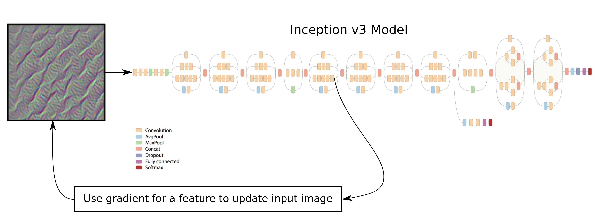
导入
%matplotlib inline
import matplotlib.pyplot as plt
import tensorflow as tf
import numpy as np
# Functions and classes for loading and using the Inception model.
import inception
使用Python3.5.2（Anaconda）开发，TensorFlow版本是：
tf.__version__
'1.1.0'
Inception 模型
从网上下载Inception模型
从网上下载Inception模型。这是你保存数据文件的默认文件夹。如果文件夹不存在就自动创建。
# inception.data_dir = 'inception/'
如果文件夹中不存在Inception模型，就自动下载。 它有85MB。
inception.maybe_download()
Downloading Inception v3 Model ...
- Download progress: 100.0%
Download finished. Extracting files.
Done.
卷积层的名称
这个函数返回Inception模型中卷积层的名称列表。
def get_conv_layer_names():
# Load the Inception model.
model = inception.Inception()
# Create a list of names for the operations in the graph
# for the Inception model where the operator-type is 'Conv2D'.
names = [op.name for op in model.graph.get_operations() if op.type=='Conv2D']
# Close the TensorFlow session inside the model-object.
model.close()
return names
conv_names = get_conv_layer_names()
在Inception模型中总共有94个卷积层。
len(conv_names)
94
写出头5个卷积层的名称。
conv_names[:5]
['conv/Conv2D',
'conv_1/Conv2D',
'conv_2/Conv2D',
'conv_3/Conv2D',
'conv_4/Conv2D']
写出最后5个卷积层的名称。
conv_names[-5:]
['mixed_10/tower_1/conv/Conv2D',
'mixed_10/tower_1/conv_1/Conv2D',
'mixed_10/tower_1/mixed/conv/Conv2D',
'mixed_10/tower_1/mixed/conv_1/Conv2D',
'mixed_10/tower_2/conv/Conv2D']
找到输入图像的帮助函数
这个函数用来寻找使网络内给定特征最大化的输入图像。它本质上是用梯度法来进行优化。图像用小的随机值初始化，然后用给定特征关于输入图像的梯度来逐步更新。
def optimize_image(conv_id=None, feature=0,
num_iterations=30, show_progress=True):
"""
Find an image that maximizes the feature
given by the conv_id and feature number.
Parameters:
conv_id: Integer identifying the convolutional layer to
maximize. It is an index into conv_names.
If None then use the last fully-connected layer
before the softmax output.
feature: Index into the layer for the feature to maximize.
num_iteration: Number of optimization iterations to perform.
show_progress: Boolean whether to show the progress.
"""
# Load the Inception model. This is done for each call of
# this function because we will add a lot to the graph
# which will cause the graph to grow and eventually the
# computer will run out of memory.
model = inception.Inception()
# Reference to the tensor that takes the raw input image.
resized_image = model.resized_image
# Reference to the tensor for the predicted classes.
# This is the output of the final layer's softmax classifier.
y_pred = model.y_pred
# Create the loss-function that must be maximized.
if conv_id is None:
# If we want to maximize a feature on the last layer,
# then we use the fully-connected layer prior to the
# softmax-classifier. The feature no. is the class-number
# and must be an integer between 1 and 1000.
# The loss-function is just the value of that feature.
loss = model.y_logits[0, feature]
else:
# If instead we want to maximize a feature of a
# convolutional layer inside the neural network.
# Get the name of the convolutional operator.
conv_name = conv_names[conv_id]
# Get a reference to the tensor that is output by the
# operator. Note that ":0" is added to the name for this.
tensor = model.graph.get_tensor_by_name(conv_name + ":0")
# Set the Inception model's graph as the default
# so we can add an operator to it.
with model.graph.as_default():
# The loss-function is the average of all the
# tensor-values for the given feature. This
# ensures that we generate the whole input image.
# You can try and modify this so it only uses
# a part of the tensor.
loss = tf.reduce_mean(tensor[:,:,:,feature])
# Get the gradient for the loss-function with regard to
# the resized input image. This creates a mathematical
# function for calculating the gradient.
gradient = tf.gradients(loss, resized_image)
# Create a TensorFlow session so we can run the graph.
session = tf.Session(graph=model.graph)
# Generate a random image of the same size as the raw input.
# Each pixel is a small random value between 128 and 129,
# which is about the middle of the colour-range.
image_shape = resized_image.get_shape()
image = np.random.uniform(size=image_shape) + 128.0
# Perform a number of optimization iterations to find
# the image that maximizes the loss-function.
for i in range(num_iterations):
# Create a feed-dict. This feeds the image to the
# tensor in the graph that holds the resized image, because
# this is the final stage for inputting raw image data.
feed_dict = {model.tensor_name_resized_image: image}
# Calculate the predicted class-scores,
# as well as the gradient and the loss-value.
pred, grad, loss_value = session.run([y_pred, gradient, loss],
feed_dict=feed_dict)
# Squeeze the dimensionality for the gradient-array.
grad = np.array(grad).squeeze()
# The gradient now tells us how much we need to change the
# input image in order to maximize the given feature.
# Calculate the step-size for updating the image.
# This step-size was found to give fast convergence.
# The addition of 1e-8 is to protect from div-by-zero.
step_size = 1.0 / (grad.std() + 1e-8)
# Update the image by adding the scaled gradient
# This is called gradient ascent.
image += step_size * grad
# Ensure all pixel-values in the image are between 0 and 255.
image = np.clip(image, 0.0, 255.0)
if show_progress:
print("Iteration:", i)
# Convert the predicted class-scores to a one-dim array.
pred = np.squeeze(pred)
# The predicted class for the Inception model.
pred_cls = np.argmax(pred)
# Name of the predicted class.
cls_name = model.name_lookup.cls_to_name(pred_cls,
only_first_name=True)
# The score (probability) for the predicted class.
cls_score = pred[pred_cls]
# Print the predicted score etc.
msg = "Predicted class-name: {0} (#{1}), score: {2:>7.2%}"
print(msg.format(cls_name, pred_cls, cls_score))
# Print statistics for the gradient.
msg = "Gradient min: {0:>9.6f}, max: {1:>9.6f}, stepsize: {2:>9.2f}"
print(msg.format(grad.min(), grad.max(), step_size))
# Print the loss-value.
print("Loss:", loss_value)
# Newline.
print()
# Close the TensorFlow session inside the model-object.
model.close()
return image.squeeze()
绘制图像和噪声的帮助函数
函数对图像做归一化，则像素值在0.0到1.0之间。
def normalize_image(x):
# Get the min and max values for all pixels in the input.
x_min = x.min()
x_max = x.max()
# Normalize so all values are between 0.0 and 1.0
x_norm = (x - x_min) / (x_max - x_min)
return x_norm
这个函数绘制一张图像。
def plot_image(image):
# Normalize the image so pixels are between 0.0 and 1.0
img_norm = normalize_image(image)
# Plot the image.
plt.imshow(img_norm, interpolation='nearest')
plt.show()
这个函数在坐标系内绘制6张图。
def plot_images(images, show_size=100):
"""
The show_size is the number of pixels to show for each image.
The max value is 299.
"""
# Create figure with sub-plots.
fig, axes = plt.subplots(2, 3)
# Adjust vertical spacing.
fig.subplots_adjust(hspace=0.1, wspace=0.1)
# Use interpolation to smooth pixels?
smooth = True
# Interpolation type.
if smooth:
interpolation = 'spline16'
else:
interpolation = 'nearest'
# For each entry in the grid.
for i, ax in enumerate(axes.flat):
# Get the i'th image and only use the desired pixels.
img = images[i, 0:show_size, 0:show_size, :]
# Normalize the image so its pixels are between 0.0 and 1.0
img_norm = normalize_image(img)
# Plot the image.
ax.imshow(img_norm, interpolation=interpolation)
# Remove ticks.
ax.set_xticks([])
ax.set_yticks([])
# Ensure the plot is shown correctly with multiple plots
# in a single Notebook cell.
plt.show()
优化和绘制图像的帮助函数
这个函数优化多张图像并绘制它们。
def optimize_images(conv_id=None, num_iterations=30, show_size=100):
"""
Find 6 images that maximize the 6 first features in the layer
given by the conv_id.
Parameters:
conv_id: Integer identifying the convolutional layer to
maximize. It is an index into conv_names.
If None then use the last layer before the softmax output.
num_iterations: Number of optimization iterations to perform.
show_size: Number of pixels to show for each image. Max 299.
"""
# Which layer are we using?
if conv_id is None:
print("Final fully-connected layer before softmax.")
else:
print("Layer:", conv_names[conv_id])
# Initialize the array of images.
images = []
# For each feature do the following. Note that the
# last fully-connected layer only supports numbers
# between 1 and 1000, while the convolutional layers
# support numbers between 0 and some other number.
# So we just use the numbers between 1 and 7.
for feature in range(1,7):
print("Optimizing image for feature no.", feature)
# Find the image that maximizes the given feature
# for the network layer identified by conv_id (or None).
image = optimize_image(conv_id=conv_id, feature=feature,
show_progress=False,
num_iterations=num_iterations)
# Squeeze the dim of the array.
image = image.squeeze()
# Append to the list of images.
images.append(image)
# Convert to numpy-array so we can index all dimensions easily.
images = np.array(images)
# Plot the images.
plot_images(images=images, show_size=show_size)
结果
为浅处的卷积层优化图像
举个例子，寻找让卷积层conv_names[conv_id]中的2号特征最大化的输入图像，其中conv_id=5。
image = optimize_image(conv_id=5, feature=2,
num_iterations=30, show_progress=True)
Iteration: 0
Predicted class-name: dishwasher (#667), score: 4.81%
Gradient min: -0.000083, max: 0.000100, stepsize: 76290.32
Loss: 4.83793
Iteration: 1
Predicted class-name: kite (#397), score: 15.12%
Gradient min: -0.000142, max: 0.000126, stepsize: 71463.42
Loss: 5.59611
Iteration: 2
Predicted class-name: wall clock (#524), score: 6.85%
Gradient min: -0.000119, max: 0.000121, stepsize: 80427.39
Loss: 6.91725
Iteration: 3
Predicted class-name: syringe (#531), score: 4.69%
Gradient min: -0.000124, max: 0.000116, stepsize: 87046.41
Loss: 7.93267
Iteration: 4
Predicted class-name: syringe (#531), score: 6.53%
Gradient min: -0.000115, max: 0.000122, stepsize: 94634.06
Loss: 8.85594
Iteration: 5
Predicted class-name: syringe (#531), score: 21.31%
Gradient min: -0.000108, max: 0.000131, stepsize: 103182.49
Loss: 9.70698
Iteration: 6
Predicted class-name: syringe (#531), score: 36.39%
Gradient min: -0.000102, max: 0.000099, stepsize: 111440.73
Loss: 10.4558
Iteration: 7
Predicted class-name: syringe (#531), score: 43.79%
Gradient min: -0.000100, max: 0.000083, stepsize: 119285.09
Loss: 11.1371
Iteration: 8
Predicted class-name: syringe (#531), score: 34.85%
Gradient min: -0.000078, max: 0.000098, stepsize: 126258.06
Loss: 11.7331
Iteration: 9
Predicted class-name: syringe (#531), score: 18.28%
Gradient min: -0.000075, max: 0.000071, stepsize: 133766.53
Loss: 12.2777
Iteration: 10
Predicted class-name: syringe (#531), score: 11.91%
Gradient min: -0.000072, max: 0.000079, stepsize: 139181.44
Loss: 12.7673
Iteration: 11
Predicted class-name: binder (#835), score: 13.27%
Gradient min: -0.000079, max: 0.000070, stepsize: 145263.47
Loss: 13.2062
Iteration: 12
Predicted class-name: binder (#835), score: 15.05%
Gradient min: -0.000060, max: 0.000101, stepsize: 150589.72
Loss: 13.6149
Iteration: 13
Predicted class-name: binder (#835), score: 14.79%
Gradient min: -0.000074, max: 0.000072, stepsize: 156626.62
Loss: 13.9922
Iteration: 14
Predicted class-name: binder (#835), score: 14.44%
Gradient min: -0.000078, max: 0.000062, stepsize: 160979.04
Loss: 14.3428
Iteration: 15
Predicted class-name: binder (#835), score: 11.76%
Gradient min: -0.000081, max: 0.000081, stepsize: 164249.60
Loss: 14.6689
Iteration: 16
Predicted class-name: binder (#835), score: 9.61%
Gradient min: -0.000069, max: 0.000073, stepsize: 169375.77
Loss: 14.968
Iteration: 17
Predicted class-name: binder (#835), score: 7.51%
Gradient min: -0.000060, max: 0.000086, stepsize: 173951.43
Loss: 15.2644
Iteration: 18
Predicted class-name: binder (#835), score: 6.16%
Gradient min: -0.000057, max: 0.000074, stepsize: 176921.49
Loss: 15.5303
Iteration: 19
Predicted class-name: quilt (#976), score: 6.22%
Gradient min: -0.000067, max: 0.000068, stepsize: 182788.52
Loss: 15.7967
Iteration: 20
Predicted class-name: quilt (#976), score: 7.31%
Gradient min: -0.000068, max: 0.000063, stepsize: 185266.16
Loss: 16.0442
Iteration: 21
Predicted class-name: bib (#941), score: 7.74%
Gradient min: -0.000048, max: 0.000066, stepsize: 190195.76
Loss: 16.2883
Iteration: 22
Predicted class-name: bib (#941), score: 9.43%
Gradient min: -0.000060, max: 0.000047, stepsize: 192709.62
Loss: 16.5165
Iteration: 23
Predicted class-name: bib (#941), score: 11.05%
Gradient min: -0.000064, max: 0.000049, stepsize: 197288.09
Loss: 16.7361
Iteration: 24
Predicted class-name: bib (#941), score: 12.59%
Gradient min: -0.000054, max: 0.000047, stepsize: 201010.69
Loss: 16.9544
Iteration: 25
Predicted class-name: bib (#941), score: 15.13%
Gradient min: -0.000045, max: 0.000049, stepsize: 204798.67
Loss: 17.1659
Iteration: 26
Predicted class-name: bib (#941), score: 15.91%
Gradient min: -0.000047, max: 0.000047, stepsize: 208499.70
Loss: 17.3637
Iteration: 27
Predicted class-name: bib (#941), score: 17.96%
Gradient min: -0.000056, max: 0.000059, stepsize: 210286.13
Loss: 17.559
Iteration: 28
Predicted class-name: bib (#941), score: 19.26%
Gradient min: -0.000043, max: 0.000043, stepsize: 214742.82
Loss: 17.7469
Iteration: 29
Predicted class-name: bib (#941), score: 18.87%
Gradient min: -0.000047, max: 0.000059, stepsize: 218511.00
Loss: 17.9321
plot_image(image)
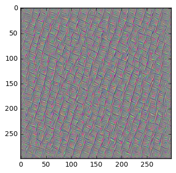
为卷积层优化多张图像
下面，我们为Inception模型中的卷积层优化多张图像，并绘制它们。这些图像展示了卷积层“想看到的”内容。注意更深的层次里图案变得越来越复杂。
optimize_images(conv_id=0, num_iterations=10)
Layer: conv/Conv2D
Optimizing image for feature no. 1
Optimizing image for feature no. 2
Optimizing image for feature no. 3
Optimizing image for feature no. 4
Optimizing image for feature no. 5
optimize_images(conv_id=3, num_iterations=30)
Layer: conv_3/Conv2D
Optimizing image for feature no. 1
Optimizing image for feature no. 2
Optimizing image for feature no. 3
Optimizing image for feature no. 4
Optimizing image for feature no. 5
Optimizing image for feature no. 6
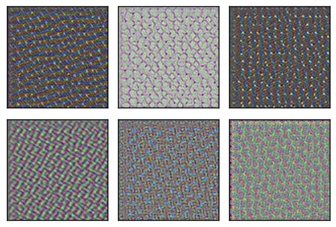
optimize_images(conv_id=4, num_iterations=30)
Layer: conv_4/Conv2D
Optimizing image for feature no. 1
Optimizing image for feature no. 2
Optimizing image for feature no. 3
Optimizing image for feature no. 4
Optimizing image for feature no. 5
Optimizing image for feature no. 6
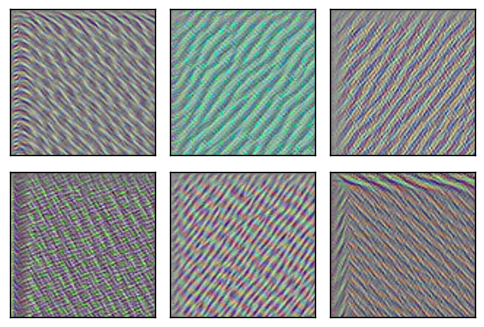
optimize_images(conv_id=5, num_iterations=30)
Layer: mixed/conv/Conv2D
Optimizing image for feature no. 1
Optimizing image for feature no. 2
Optimizing image for feature no. 3
Optimizing image for feature no. 4
Optimizing image for feature no. 5
Optimizing image for feature no. 6
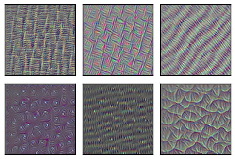
optimize_images(conv_id=6, num_iterations=30)
Layer: mixed/tower/conv/Conv2D
Optimizing image for feature no. 1
Optimizing image for feature no. 2
Optimizing image for feature no. 3
Optimizing image for feature no. 4
Optimizing image for feature no. 5
Optimizing image for feature no. 6

optimize_images(conv_id=7, num_iterations=30)
Layer: mixed/tower/conv_1/Conv2D
Optimizing image for feature no. 1
Optimizing image for feature no. 2
Optimizing image for feature no. 3
Optimizing image for feature no. 4
Optimizing image for feature no. 5
Optimizing image for feature no. 6
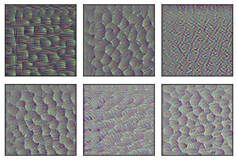
optimize_images(conv_id=8, num_iterations=30)
Layer: mixed/tower_1/conv/Conv2D
Optimizing image for feature no. 1
Optimizing image for feature no. 2
Optimizing image for feature no. 3
Optimizing image for feature no. 4
Optimizing image for feature no. 5
Optimizing image for feature no. 6
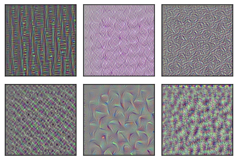
optimize_images(conv_id=9, num_iterations=30)
Layer: mixed/tower_1/conv_1/Conv2D
Optimizing image for feature no. 1
Optimizing image for feature no. 2
Optimizing image for feature no. 3
Optimizing image for feature no. 4
Optimizing image for feature no. 5
Optimizing image for feature no. 6
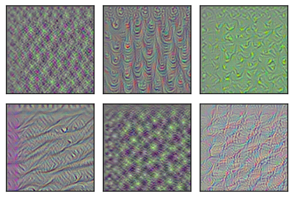
optimize_images(conv_id=10, num_iterations=30)
Layer: mixed/tower_1/conv_2/Conv2D
Optimizing image for feature no. 1
Optimizing image for feature no. 2
Optimizing image for feature no. 3
Optimizing image for feature no. 4
Optimizing image for feature no. 5
Optimizing image for feature no. 6
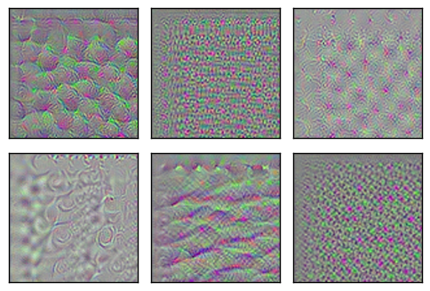
optimize_images(conv_id=20, num_iterations=30)
Layer: mixed_2/tower/conv/Conv2D
Optimizing image for feature no. 1
Optimizing image for feature no. 2
Optimizing image for feature no. 3
Optimizing image for feature no. 4
Optimizing image for feature no. 5
Optimizing image for feature no. 6
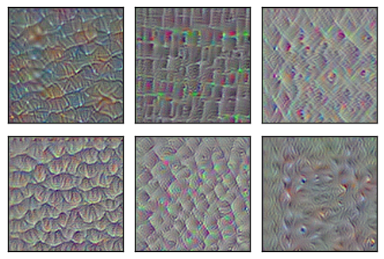
optimize_images(conv_id=30, num_iterations=30)
Layer: mixed_4/conv/Conv2D
Optimizing image for feature no. 1
Optimizing image for feature no. 2
Optimizing image for feature no. 3
Optimizing image for feature no. 4
Optimizing image for feature no. 5
Optimizing image for feature no. 6
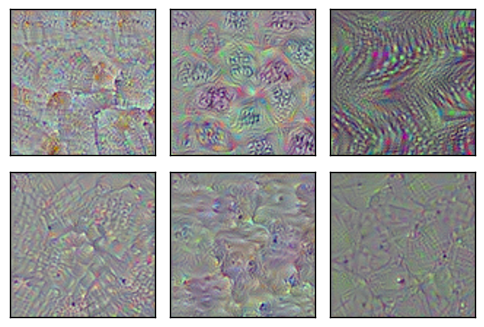
optimize_images(conv_id=40, num_iterations=30)
Layer: mixed_5/conv/Conv2D
Optimizing image for feature no. 1
Optimizing image for feature no. 2
Optimizing image for feature no. 3
Optimizing image for feature no. 4
Optimizing image for feature no. 5
Optimizing image for feature no. 6
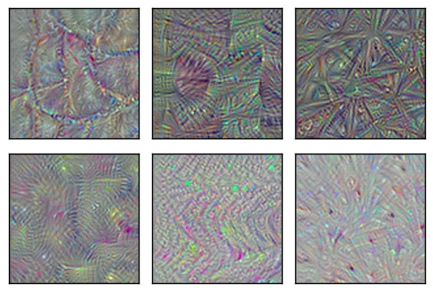
optimize_images(conv_id=50, num_iterations=30)
Layer: mixed_6/conv/Conv2D
Optimizing image for feature no. 1
Optimizing image for feature no. 2
Optimizing image for feature no. 3
Optimizing image for feature no. 4
Optimizing image for feature no. 5
Optimizing image for feature no. 6
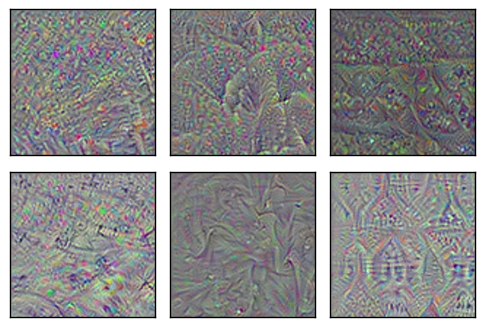
optimize_images(conv_id=60, num_iterations=30)
Layer: mixed_7/conv/Conv2D
Optimizing image for feature no. 1
Optimizing image for feature no. 2
Optimizing image for feature no. 3
Optimizing image for feature no. 4
Optimizing image for feature no. 5
Optimizing image for feature no. 6
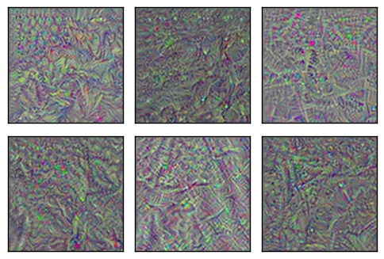
optimize_images(conv_id=70, num_iterations=30)
Layer: mixed_8/tower/conv/Conv2D
Optimizing image for feature no. 1
Optimizing image for feature no. 2
Optimizing image for feature no. 3
Optimizing image for feature no. 4
Optimizing image for feature no. 5
Optimizing image for feature no. 6
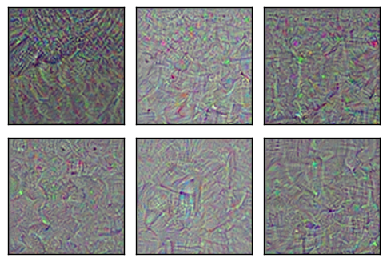
optimize_images(conv_id=80, num_iterations=30)
Layer: mixed_9/tower_1/conv/Conv2D
Optimizing image for feature no. 1
Optimizing image for feature no. 2
Optimizing image for feature no. 3
Optimizing image for feature no. 4
Optimizing image for feature no. 5
Optimizing image for feature no. 6
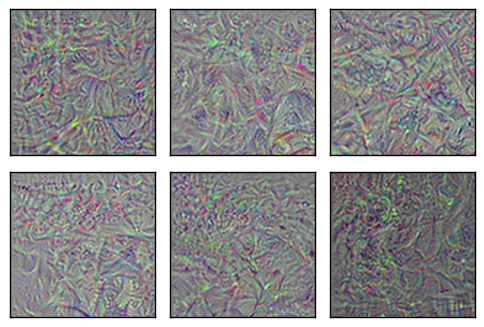
optimize_images(conv_id=90, num_iterations=30)
Layer: mixed_10/tower_1/conv_1/Conv2D
Optimizing image for feature no. 1
Optimizing image for feature no. 2
Optimizing image for feature no. 3
Optimizing image for feature no. 4
Optimizing image for feature no. 5
Optimizing image for feature no. 6
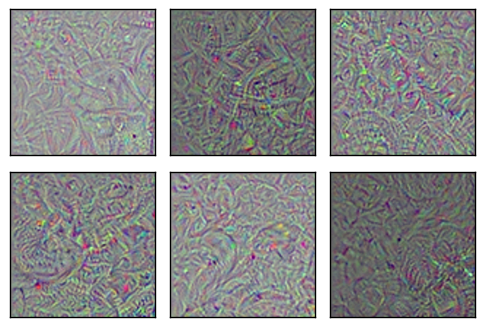
optimize_images(conv_id=93, num_iterations=30)
Layer: mixed_10/tower_2/conv/Conv2D
Optimizing image for feature no. 1
Optimizing image for feature no. 2
Optimizing image for feature no. 3
Optimizing image for feature no. 4
Optimizing image for feature no. 5
Optimizing image for feature no. 6
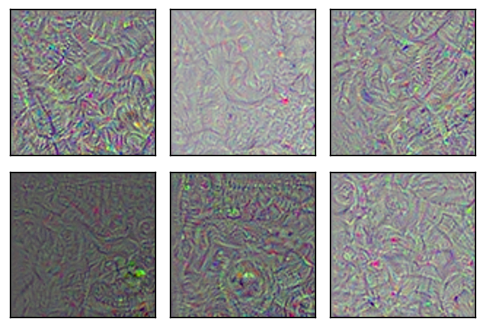
Softmax前最终的全连接层
现在，我们为Inception模型中的最后一层优化并绘制图像。这是在softmax分类器前的全连接层。该层特征对应了输出的类别。
我们可能希望在这些图像里看到一些可识别的图案，比如对应输出类别的猴子、鸟类等，但图像只显示了一些复杂的、抽象的图案。
optimize_images(conv_id=None, num_iterations=30)
Final fully-connected layer before softmax.
Optimizing image for feature no. 1
Optimizing image for feature no. 2
Optimizing image for feature no. 3
Optimizing image for feature no. 4
Optimizing image for feature no. 5
Optimizing image for feature no. 6
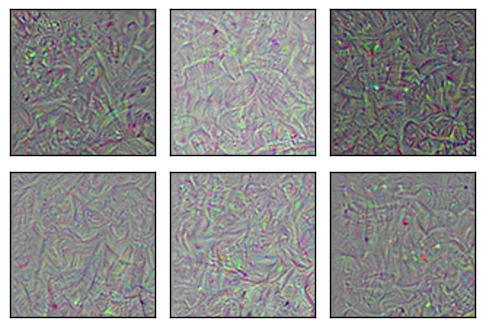
上面只显示了100x100像素的图像，但实际上是299x299像素。如果我们执行更多的优化迭代并画出完整的图像，可能会有一些可识别的模式。那么，让我们再次优化第一张图像，并以全分辨率来绘制。
Inception模型以大约100%的确信度将结果图像分类成“敏狐”，但在人眼看来，图像只是一些抽象的图案。
如果你想测试另一个特征号码，要注意，号码必须介于0到1000之间，因为它对应了最终输出层的一个有效类别号。
image = optimize_image(conv_id=None, feature=1,
num_iterations=100, show_progress=True)
Iteration: 0
Predicted class-name: dishwasher (#667), score: 4.98%
Gradient min: -0.006252, max: 0.004451, stepsize: 3734.48
Loss: -0.837608
Iteration: 1
Predicted class-name: ballpoint (#907), score: 8.52%
Gradient min: -0.007303, max: 0.006427, stepsize: 2152.89
Loss: -0.416723
Iteration: 2
Predicted class-name: spider web (#600), score: 90.44%
Gradient min: -0.007480, max: 0.012272, stepsize: 1343.66
Loss: 2.77814
Iteration: 3
Predicted class-name: pot (#838), score: 3.01%
Gradient min: -0.009853, max: 0.007638, stepsize: 1526.98
Loss: 3.27751
Iteration: 4
Predicted class-name: American egret (#426), score: 11.55%
Gradient min: -0.008507, max: 0.006308, stepsize: 1787.96
Loss: 5.95497
Iteration: 5
Predicted class-name: spider web (#600), score: 21.98%
Gradient min: -0.010415, max: 0.009410, stepsize: 1722.27
Loss: 5.07394
Iteration: 6
Predicted class-name: kit fox (#1), score: 29.21%
Gradient min: -0.009298, max: 0.007885, stepsize: 2471.91
Loss: 7.98241
Iteration: 7
Predicted class-name: brain coral (#649), score: 8.95%
Gradient min: -0.004683, max: 0.004366, stepsize: 2876.78
Loss: 2.61856
Iteration: 8
Predicted class-name: kit fox (#1), score: 30.05%
Gradient min: -0.008918, max: 0.006374, stepsize: 2243.47
Loss: 8.18703
Iteration: 9
Predicted class-name: kit fox (#1), score: 55.10%
Gradient min: -0.041977, max: 0.025564, stepsize: 1270.96
Loss: 9.4695
Iteration: 10
Predicted class-name: kit fox (#1), score: 45.79%
Gradient min: -0.025474, max: 0.026726, stepsize: 858.88
Loss: 8.49094
Iteration: 11
Predicted class-name: kit fox (#1), score: 71.39%
Gradient min: -0.021939, max: 0.016643, stepsize: 1316.54
Loss: 12.4999
Iteration: 12
Predicted class-name: kit fox (#1), score: 82.78%
Gradient min: -0.011797, max: 0.017714, stepsize: 1763.08
Loss: 11.1421
Iteration: 13
Predicted class-name: kit fox (#1), score: 67.38%
Gradient min: -0.016686, max: 0.015832, stepsize: 1908.94
Loss: 11.186
Iteration: 14
Predicted class-name: kit fox (#1), score: 57.64%
Gradient min: -0.017312, max: 0.014563, stepsize: 1412.06
Loss: 9.67373
Iteration: 15
Predicted class-name: kit fox (#1), score: 69.09%
Gradient min: -0.005773, max: 0.005870, stepsize: 3163.64
Loss: 12.9428
Iteration: 16
Predicted class-name: kit fox (#1), score: 82.98%
Gradient min: -0.020765, max: 0.017950, stepsize: 1225.38
Loss: 10.6559
Iteration: 17
Predicted class-name: kit fox (#1), score: 99.04%
Gradient min: -0.005492, max: 0.006126, stepsize: 2520.72
Loss: 16.579
Iteration: 18
Predicted class-name: kit fox (#1), score: 86.78%
Gradient min: -0.017253, max: 0.028574, stepsize: 1280.11
Loss: 11.7084
Iteration: 19
Predicted class-name: kit fox (#1), score: 96.57%
Gradient min: -0.007056, max: 0.006660, stepsize: 1838.04
Loss: 17.8698
Iteration: 20
Predicted class-name: kit fox (#1), score: 99.04%
Gradient min: -0.008916, max: 0.008408, stepsize: 2720.73
Loss: 17.922
Iteration: 21
Predicted class-name: kit fox (#1), score: 68.39%
Gradient min: -0.012104, max: 0.013627, stepsize: 1398.73
Loss: 12.5718
Iteration: 22
Predicted class-name: kit fox (#1), score: 98.38%
Gradient min: -0.007660, max: 0.007840, stepsize: 2043.20
Loss: 14.0164
Iteration: 23
Predicted class-name: kit fox (#1), score: 98.36%
Gradient min: -0.009233, max: 0.006748, stepsize: 1951.74
Loss: 19.118
Iteration: 24
Predicted class-name: kit fox (#1), score: 99.44%
Gradient min: -0.013526, max: 0.015166, stepsize: 1557.67
Loss: 23.2171
Iteration: 25
Predicted class-name: kit fox (#1), score: 99.83%
Gradient min: -0.005306, max: 0.006063, stepsize: 2142.04
Loss: 21.0666
Iteration: 26
Predicted class-name: kit fox (#1), score: 99.85%
Gradient min: -0.005931, max: 0.005094, stepsize: 2287.80
Loss: 21.2772
Iteration: 27
Predicted class-name: kit fox (#1), score: 97.91%
Gradient min: -0.008425, max: 0.010999, stepsize: 1633.57
Loss: 23.1276
Iteration: 28
Predicted class-name: kit fox (#1), score: 99.98%
Gradient min: -0.012720, max: 0.010505, stepsize: 1749.55
Loss: 25.9384
Iteration: 29
Predicted class-name: kit fox (#1), score: 99.90%
Gradient min: -0.020819, max: 0.023275, stepsize: 1026.48
Loss: 22.4687
Iteration: 30
Predicted class-name: kit fox (#1), score: 99.87%
Gradient min: -0.005569, max: 0.007158, stepsize: 2436.42
Loss: 21.3727
Iteration: 31
Predicted class-name: kit fox (#1), score: 97.25%
Gradient min: -0.010902, max: 0.007087, stepsize: 1689.47
Loss: 13.2659
Iteration: 32
Predicted class-name: kit fox (#1), score: 99.96%
Gradient min: -0.006695, max: 0.006514, stepsize: 2277.89
Loss: 23.113
Iteration: 33
Predicted class-name: kit fox (#1), score: 99.89%
Gradient min: -0.011343, max: 0.011963, stepsize: 1713.67
Loss: 20.4645
Iteration: 34
Predicted class-name: kit fox (#1), score: 99.83%
Gradient min: -0.005129, max: 0.005226, stepsize: 2531.23
Loss: 22.9016
Iteration: 35
Predicted class-name: kit fox (#1), score: 99.96%
Gradient min: -0.004618, max: 0.005916, stepsize: 1979.85
Loss: 19.6406
Iteration: 36
Predicted class-name: kit fox (#1), score: 99.94%
Gradient min: -0.005298, max: 0.007882, stepsize: 2158.99
Loss: 26.6898
Iteration: 37
Predicted class-name: kit fox (#1), score: 99.77%
Gradient min: -0.009913, max: 0.010110, stepsize: 1643.65
Loss: 21.2908
Iteration: 38
Predicted class-name: kit fox (#1), score: 99.99%
Gradient min: -0.005472, max: 0.004434, stepsize: 2654.99
Loss: 28.4096
Iteration: 39
Predicted class-name: kit fox (#1), score: 99.99%
Gradient min: -0.006044, max: 0.007171, stepsize: 1646.69
Loss: 32.005
Iteration: 40
Predicted class-name: kit fox (#1), score: 100.00%
Gradient min: -0.007782, max: 0.007306, stepsize: 1853.00
Loss: 34.7635
Iteration: 41
Predicted class-name: kit fox (#1), score: 99.94%
Gradient min: -0.030789, max: 0.017443, stepsize: 1224.15
Loss: 32.2997
Iteration: 42
Predicted class-name: kit fox (#1), score: 100.00%
Gradient min: -0.005752, max: 0.006784, stepsize: 2148.87
Loss: 34.8329
Iteration: 43
Predicted class-name: kit fox (#1), score: 99.98%
Gradient min: -0.005747, max: 0.005908, stepsize: 2058.32
Loss: 33.3857
Iteration: 44
Predicted class-name: kit fox (#1), score: 99.99%
Gradient min: -0.005644, max: 0.005296, stepsize: 2042.49
Loss: 33.5334
Iteration: 45
Predicted class-name: kit fox (#1), score: 100.00%
Gradient min: -0.008353, max: 0.008290, stepsize: 1814.68
Loss: 34.6049
Iteration: 46
Predicted class-name: kit fox (#1), score: 99.99%
Gradient min: -0.007643, max: 0.006041, stepsize: 2002.25
Loss: 36.0055
Iteration: 47
Predicted class-name: kit fox (#1), score: 99.99%
Gradient min: -0.008912, max: 0.009060, stepsize: 1462.12
Loss: 31.0812
Iteration: 48
Predicted class-name: kit fox (#1), score: 99.99%
Gradient min: -0.018941, max: 0.019518, stepsize: 1859.71
Loss: 36.9466
Iteration: 49
Predicted class-name: kit fox (#1), score: 100.00%
Gradient min: -0.007313, max: 0.010175, stepsize: 1605.92
Loss: 39.6561
Iteration: 50
Predicted class-name: kit fox (#1), score: 99.99%
Gradient min: -0.005102, max: 0.005128, stepsize: 2222.82
Loss: 34.06
Iteration: 51
Predicted class-name: kit fox (#1), score: 100.00%
Gradient min: -0.009598, max: 0.007205, stepsize: 1756.78
Loss: 26.9699
Iteration: 52
Predicted class-name: kit fox (#1), score: 100.00%
Gradient min: -0.006587, max: 0.006691, stepsize: 1967.08
Loss: 37.3345
Iteration: 53
Predicted class-name: kit fox (#1), score: 100.00%
Gradient min: -0.006564, max: 0.006621, stepsize: 2305.14
Loss: 39.8643
Iteration: 54
Predicted class-name: kit fox (#1), score: 100.00%
Gradient min: -0.020868, max: 0.016884, stepsize: 1375.65
Loss: 37.7343
Iteration: 55
Predicted class-name: kit fox (#1), score: 100.00%
Gradient min: -0.005574, max: 0.005976, stepsize: 1908.25
Loss: 41.346
Iteration: 56
Predicted class-name: kit fox (#1), score: 100.00%
Gradient min: -0.009256, max: 0.010253, stepsize: 1768.63
Loss: 35.9501
Iteration: 57
Predicted class-name: kit fox (#1), score: 100.00%
Gradient min: -0.010851, max: 0.017633, stepsize: 1499.83
Loss: 42.5105
Iteration: 58
Predicted class-name: kit fox (#1), score: 100.00%
Gradient min: -0.005229, max: 0.006164, stepsize: 2135.08
Loss: 43.219
Iteration: 59
Predicted class-name: kit fox (#1), score: 100.00%
Gradient min: -0.006745, max: 0.006746, stepsize: 1642.55
Loss: 38.7929
Iteration: 60
Predicted class-name: kit fox (#1), score: 100.00%
Gradient min: -0.005743, max: 0.004990, stepsize: 2049.10
Loss: 45.1963
Iteration: 61
Predicted class-name: kit fox (#1), score: 100.00%
Gradient min: -0.007454, max: 0.006493, stepsize: 1576.57
Loss: 39.2328
Iteration: 62
Predicted class-name: kit fox (#1), score: 100.00%
Gradient min: -0.005872, max: 0.006283, stepsize: 2189.59
Loss: 42.8966
Iteration: 63
Predicted class-name: kit fox (#1), score: 100.00%
Gradient min: -0.006593, max: 0.007255, stepsize: 1561.50
Loss: 43.5881
Iteration: 64
Predicted class-name: kit fox (#1), score: 100.00%
Gradient min: -0.006010, max: 0.005091, stepsize: 1858.49
Loss: 49.4166
Iteration: 65
Predicted class-name: kit fox (#1), score: 100.00%
Gradient min: -0.011517, max: 0.009566, stepsize: 1209.07
Loss: 41.3484
Iteration: 66
Predicted class-name: kit fox (#1), score: 100.00%
Gradient min: -0.008072, max: 0.008848, stepsize: 2159.80
Loss: 45.9205
Iteration: 67
Predicted class-name: kit fox (#1), score: 100.00%
Gradient min: -0.008305, max: 0.006268, stepsize: 1548.71
Loss: 42.3279
Iteration: 68
Predicted class-name: kit fox (#1), score: 100.00%
Gradient min: -0.006149, max: 0.009358, stepsize: 1883.51
Loss: 46.414
Iteration: 69
Predicted class-name: kit fox (#1), score: 100.00%
Gradient min: -0.006578, max: 0.006697, stepsize: 1474.94
Loss: 42.8873
Iteration: 70
Predicted class-name: kit fox (#1), score: 100.00%
Gradient min: -0.005391, max: 0.006146, stepsize: 2104.57
Loss: 49.2656
Iteration: 71
Predicted class-name: kit fox (#1), score: 100.00%
Gradient min: -0.008280, max: 0.008504, stepsize: 1563.85
Loss: 49.4512
Iteration: 72
Predicted class-name: kit fox (#1), score: 100.00%
Gradient min: -0.009657, max: 0.011234, stepsize: 1538.54
Loss: 52.4693
Iteration: 73
Predicted class-name: kit fox (#1), score: 100.00%
Gradient min: -0.006796, max: 0.008983, stepsize: 1630.90
Loss: 47.8848
Iteration: 74
Predicted class-name: kit fox (#1), score: 100.00%
Gradient min: -0.007820, max: 0.007669, stepsize: 1989.92
Loss: 53.1304
Iteration: 75
Predicted class-name: kit fox (#1), score: 100.00%
Gradient min: -0.007080, max: 0.009358, stepsize: 1601.16
Loss: 52.802
Iteration: 76
Predicted class-name: kit fox (#1), score: 100.00%
Gradient min: -0.006778, max: 0.011433, stepsize: 1852.65
Loss: 51.9139
Iteration: 77
Predicted class-name: kit fox (#1), score: 100.00%
Gradient min: -0.007497, max: 0.007986, stepsize: 1568.70
Loss: 49.05
Iteration: 78
Predicted class-name: kit fox (#1), score: 100.00%
Gradient min: -0.005112, max: 0.006590, stepsize: 2242.10
Loss: 58.7734
Iteration: 79
Predicted class-name: kit fox (#1), score: 100.00%
Gradient min: -0.008460, max: 0.008341, stepsize: 1525.32
Loss: 60.3876
Iteration: 80
Predicted class-name: kit fox (#1), score: 100.00%
Gradient min: -0.006530, max: 0.006501, stepsize: 1898.08
Loss: 60.4282
Iteration: 81
Predicted class-name: kit fox (#1), score: 100.00%
Gradient min: -0.009223, max: 0.006812, stepsize: 1697.45
Loss: 59.8338
Iteration: 82
Predicted class-name: kit fox (#1), score: 100.00%
Gradient min: -0.006340, max: 0.006535, stepsize: 1737.38
Loss: 60.1702
Iteration: 83
Predicted class-name: kit fox (#1), score: 100.00%
Gradient min: -0.008974, max: 0.008040, stepsize: 1453.65
Loss: 59.8085
Iteration: 84
Predicted class-name: kit fox (#1), score: 100.00%
Gradient min: -0.008100, max: 0.005810, stepsize: 1709.52
Loss: 63.3426
Iteration: 85
Predicted class-name: kit fox (#1), score: 100.00%
Gradient min: -0.006354, max: 0.008465, stepsize: 1674.72
Loss: 62.9884
Iteration: 86
Predicted class-name: kit fox (#1), score: 100.00%
Gradient min: -0.007080, max: 0.006697, stepsize: 1713.75
Loss: 66.6128
Iteration: 87
Predicted class-name: kit fox (#1), score: 100.00%
Gradient min: -0.015349, max: 0.009788, stepsize: 1500.05
Loss: 63.2206
Iteration: 88
Predicted class-name: kit fox (#1), score: 100.00%
Gradient min: -0.008576, max: 0.007250, stepsize: 1536.09
Loss: 68.5237
Iteration: 89
Predicted class-name: kit fox (#1), score: 100.00%
Gradient min: -0.005157, max: 0.005224, stepsize: 1869.55
Loss: 71.2678
Iteration: 90
Predicted class-name: kit fox (#1), score: 100.00%
Gradient min: -0.007810, max: 0.007995, stepsize: 1401.19
Loss: 62.0469
Iteration: 91
Predicted class-name: kit fox (#1), score: 100.00%
Gradient min: -0.010371, max: 0.009543, stepsize: 1559.59
Loss: 70.518
Iteration: 92
Predicted class-name: kit fox (#1), score: 100.00%
Gradient min: -0.009110, max: 0.006689, stepsize: 1855.04
Loss: 67.8497
Iteration: 93
Predicted class-name: kit fox (#1), score: 100.00%
Gradient min: -0.005365, max: 0.006440, stepsize: 1969.30
Loss: 69.9785
Iteration: 94
Predicted class-name: kit fox (#1), score: 100.00%
Gradient min: -0.010603, max: 0.011318, stepsize: 1475.43
Loss: 69.6375
Iteration: 95
Predicted class-name: kit fox (#1), score: 100.00%
Gradient min: -0.004267, max: 0.005465, stepsize: 2023.68
Loss: 76.1746
Iteration: 96
Predicted class-name: kit fox (#1), score: 100.00%
Gradient min: -0.011737, max: 0.010223, stepsize: 1207.37
Loss: 58.1862
Iteration: 97
Predicted class-name: kit fox (#1), score: 100.00%
Gradient min: -0.005620, max: 0.005410, stepsize: 1992.51
Loss: 73.5772
Iteration: 98
Predicted class-name: kit fox (#1), score: 100.00%
Gradient min: -0.007732, max: 0.010692, stepsize: 1286.44
Loss: 67.5603
Iteration: 99
Predicted class-name: kit fox (#1), score: 100.00%
Gradient min: -0.005850, max: 0.006159, stepsize: 1863.65
Loss: 75.6356
plot_image(image=image)
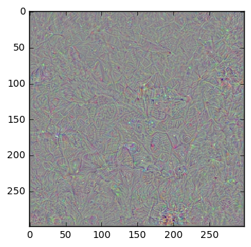
关闭TensorFlow会话
在上面使用Inception模型的函数中已经关闭了TensorFlow会话。这么做是为了节省内存，因此当计算图中添加了很多梯度函数时，电脑不会奔溃。
总结
这篇教程说明了如何优化输入图像，使得神经网络内的特征最大化。由于神经网络内给定特征（或神经元）对特定的图像反应最强烈，这让我们可以对其“喜欢看到的东西”进行可视化分析。
对神经网络的较低层，图像包含了简单的图案，比如不同类型的波浪线。随着网络越来越深，图像模式越来越复杂。我们可能会希望深层网络的模式是可识别的，比如猴子、狐狸、汽车等等，但实际上深层网络的图像模式更加复杂和抽象。
这是为什么？回想在教程 #11中，Inception模型很容易就被一些对抗噪声糊弄，而将任何输入图分类为另外的目标类别。因此，不难想象Inception模型可以识别这些在人眼看来并不清楚的抽象图像模式。可能存在无穷多的能够最大化神经网络内部特征的图像，并且人类只能识别出其中的一小部分。这也许是优化过程只找到抽象图像模式的原因。
其他方法
研究文献中还有许多指导优化过程的建议，从而找到人类更易识别的图像模式。
这篇文章提出了一种结合启发式来引导图像模式的优化过程。论文中展示了一些类别的样本图像，比如火烈鸟、鹈鹕、黑天鹅，人眼多多少少都能识别出来。在这里有方法的实现（精确的行数以后可能会改变）。这个方法需要启发式的组合并对参数进行微调，以生成这些图像。但论文中参数的选择并不明确。尽管尝试了一番，我还是无法重现他们的结果。也许我误解了这篇论文，或许启发式对他们网络架构（一种AlexNet的变体）的微调是好的，然而这篇教程中用的是更先进的Inception模型。
这篇文章提出了另一种生成人眼可识别的图像的方法。然而，实际上这个方法作弊了，因为它遍历训练集中的所有图像（比如ImageNet），找到能最大激活神经网络中给定特征的图像。然后对相似的图像做聚类和平均。将这个作为优化程序的初始图像。因此，当使用从真实照片构造的图像时，这个方法能得到更好的结果也不足为怪了。
练习
下面使一些可能会让你提升TensorFlow技能的一些建议练习。为了学习如何更合适地使用TensorFlow，实践经验是很重要的。
在你对这个Notebook进行修改之前，可能需要先备份一下。
- 尝试为网络中较低层的特征运行多次优化。得到的图像总是相同吗？
- 试着用更少或更多的优化迭代。这对图像质量有何影响？
- 试着改变卷积特征的损失函数。这可以用不同的方法来做。它将如何影响图样模式？为什么？
- 你认为优化器除了增大我们想要最大化的那个特征之外，会放大其他特征吗？你要怎么度量这个？你确定优化器一次只会最大化一个特征吗？
- 试着同时最大化多个特征。
- 在MNIST数据集上训练一个小一点的网络，然后试着对特征和层次做可视化。会更容易在图像中看到图案吗？
- 试着实现上述论文中的方法。
- 试着用你自己的方法来改善优化的图像。
- 向朋友解释程序如何工作。
License (MIT)
Copyright (c) 2016 by Magnus Erik Hvass Pedersen
Permission is hereby granted, free of charge, to any person obtaining a copy of this software and associated documentation files (the "Software"), to deal in the Software without restriction, including without limitation the rights to use, copy, modify, merge, publish, distribute, sublicense, and/or sell copies of the Software, and to permit persons to whom the Software is furnished to do so, subject to the following conditions:
The above copyright notice and this permission notice shall be included in all copies or substantial portions of the Software.
THE SOFTWARE IS PROVIDED "AS IS", WITHOUT WARRANTY OF ANY KIND, EXPRESS OR IMPLIED, INCLUDING BUT NOT LIMITED TO THE WARRANTIES OF MERCHANTABILITY, FITNESS FOR A PARTICULAR PURPOSE AND NONINFRINGEMENT. IN NO EVENT SHALL THE AUTHORS OR COPYRIGHT HOLDERS BE LIABLE FOR ANY CLAIM, DAMAGES OR OTHER LIABILITY, WHETHER IN AN ACTION OF CONTRACT, TORT OR OTHERWISE, ARISING FROM, OUT OF OR IN CONNECTION WITH THE SOFTWARE OR THE USE OR OTHER DEALINGS IN THE SOFTWARE.